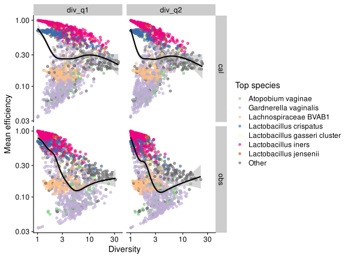
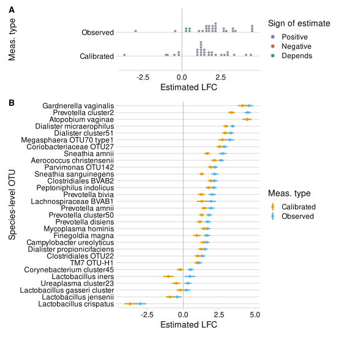

Analyze the impact of bias on a DA analysis of relative abundances versus diversity.
# Tools for microbiome data
library(speedyseq)
# Tools for general purpose data manipulation and plotting
library(tidyverse)
library(fs)
library(here)
# ggplot helpers
library(ggbeeswarm)
library(ggforce)
library(ggdist)
library(cowplot)
library(patchwork)
library(scales)
# stats helpers
# library(broom)
library(metacal); packageVersion("metacal")
[1] '0.2.0.9009'theme_set(theme_cowplot())
scale_y_custom <- scale_y_continuous(
trans = 'log10',
breaks = trans_breaks('log10', function(x) 10^x),
labels = trans_format('log10', math_format(10^.x))
)
Load the MOMS-PI profiles and estimate bias,
To simplify interpretation of some of the regression models, let’s rarefy samples to 10K reads (we’ll be dropping some samples that are below this limit).
momspi_rare <- xfun::cache_rds({
momspi %>%
rarefy_even_depth(
sample.size = 1e4,
rngseed = 42,
replace = FALSE,
trimOTUs = FALSE
)
}, dir = '_cache/', file = 'momspi_rare', hash = list(momspi))
# Make sure no taxa have 0 reads, in case this causes issues later on
stopifnot(all(momspi_rare %>% taxa_sums > 0))
Let’s also add the new sample sums and estimated mean efficiency and
momspi_rare <- momspi_rare %>%
mutate_sample_data(.,
sample_sum_original = sample_sum,
sample_sum = sample_sums(.),
mean_efficiency = mean_efficiency(., bias, type = 'observed')
)
Let’s also add the top species in each sample,
get_top_species <- function(ps) {
x <- ps %>%
transform_sample_counts(close_elts) %>%
otu_table %>%
as_tibble(pivot = TRUE) %>%
with_groups(.sample, slice_max, .abundance, n = 1)
if (anyDuplicated(x$.sample))
stop('Ties present')
x %>% select(.sample, top_species = .otu)
}
top_species <- list(
'obs' = momspi_rare,
'cal' = momspi_rare %>% calibrate(bias)
) %>%
map_dfr(get_top_species, .id = 'type')
top_species_wide <- top_species %>%
pivot_wider(values_from = top_species, names_from = type,
names_prefix = 'top_species_')
momspi_rare <- momspi_rare %>%
left_join_sample_data(top_species_wide, by = '.sample')
Compute Shannon and Inverse-Simpson diversity indices and add to the sample metadata. Phyloseq::estimate_richness() will complain about the lack of singletons, but we can ignore this since we aren’t using species richness estimators. I will exponentiate the Shannon index to convert it to the q1 Hill number so that (like Inverse Simpson) it has the scale of number of species.
div <- list(
'obs' = momspi_rare,
'cal' = momspi_rare %>% calibrate(bias)
) %>%
map(estimate_richness, measures = c('Shannon', 'InvSimpson')) %>%
map_dfr(as_tibble, rownames = '.sample', .id = 'type') %>%
transmute(
.sample, type,
div_q1 = exp(Shannon),
div_q2 = InvSimpson,
) %>%
pivot_longer(starts_with('div_'), names_to = 'index', values_to = 'diversity')
div_wide <- div %>%
pivot_wider(values_from = diversity, names_from = c('index', 'type'))
p <- div_wide %>%
mutate(across(starts_with('div'), log2)) %>%
ggplot() +
geom_autopoint(aes(x = .panel_x, y = .panel_y), alpha = 0.5) +
geom_autodensity() +
geom_bin2d(aes(x = .panel_x, y = .panel_y)) +
facet_matrix(vars(starts_with('div')), layer.diag = 2, layer.lower = 3)
ggrastr::rasterize(p, dpi = 300)
The observed (Log) order-1 and order-2 diversity show a tight correlation with each other, as do the calibrated diversities, while the correlation is much lower when comparing observed and calibrated numbers. The reason is likely that calibration will tend to increase the diversity of samples that are observed to be dominated by a high-efficiency taxon (like L. iners) and decrease the diversity of samples dominated by a low efficiency tason (like G. vaginalis).
Shannon diversity of the observed profiles is what is most often considered in vaginal microbiome studies, so let’s use this metric to partition the samples.
div_wide %>%
ggplot(aes(x = div_q1_obs)) +
scale_x_log10() +
annotate('rect', xmin = 0, xmax = 1.5, ymin = -Inf, ymax = Inf,
fill = 'blue', alpha = 0.3) +
annotate('rect', xmin = 1.5, xmax = 3, ymin = -Inf, ymax = Inf,
fill = 'grey', alpha = 0.3) +
annotate('rect', xmin = 3, xmax = Inf, ymin = -Inf, ymax = Inf,
fill = 'green', alpha = 0.3) +
geom_histogram() +
geom_vline(xintercept = c(1.5, 3), color = 'black')
I’ll pick the first mode as the ‘Low diversity’ group, treat the second mode as ‘Medium’, and the tail as ‘High’.
Add the diversity grouping information, subset to the Low and High samples, and compute the offsets for the Gamma-Poisson model
momspi_div <- momspi_rare %>%
left_join_sample_data(div_wide, by = '.sample') %>%
filter_sample_data(div_group %in% c('Low', 'High'))
We’ll use the criterion from Fettweis et al to pick the taxa to test. Note, we may not get the same exact taxa as them since we’re using a larger set of women and ignoring the medium-diversity samples. Note, the log proportions used in the regression analysis below are with respect to the full species set.
taxa_to_test <- momspi_div %>%
transform_sample_counts(close_elts) %>%
filter_taxa2(~ mean(. >= 1e-2) >= 0.05 | mean(. >= 1e-3) >= 0.15) %>%
taxa_names %>%
print
[1] "Lachnospiraceae_BVAB1" "Aerococcus_christensenii"
[3] "Atopobium_vaginae" "Campylobacter_ureolyticus"
[5] "Clostridiales_BVAB2" "Clostridiales_OTU22"
[7] "Coriobacteriaceae_OTU27" "Corynebacterium_cluster45"
[9] "Dialister_cluster51" "Dialister_micraerophilus"
[11] "Dialister_propionicifaciens" "Finegoldia_magna"
[13] "Gardnerella_vaginalis" "Lactobacillus_crispatus"
[15] "Lactobacillus_gasseri_cluster" "Lactobacillus_iners"
[17] "Lactobacillus_jensenii" "Megasphaera_OTU70_type1"
[19] "Mycoplasma_hominis" "Parvimonas_OTU142"
[21] "Peptoniphilus_indolicus" "Prevotella_amnii"
[23] "Prevotella_bivia" "Prevotella_cluster2"
[25] "Prevotella_cluster50" "Prevotella_disiens"
[27] "Sneathia_amnii" "Sneathia_sanguinegens"
[29] "TM7_OTU-H1" "Ureaplasma_cluster23" What is the fraction of zeros for the tested species?
momspi_div %>%
prune_taxa(taxa_to_test, .) %>%
as_tibble %>%
with_groups(.otu, summarize,
prev = mean(.abundance > 0),
frac_zero = mean(.abundance == 0),
) %>%
arrange(prev) %>%
knitr::kable(digits = 2)
| .otu | prev | frac_zero |
|---|---|---|
| TM7_OTU-H1 | 0.19 | 0.81 |
| Prevotella_amnii | 0.29 | 0.71 |
| Mycoplasma_hominis | 0.33 | 0.67 |
| Clostridiales_BVAB2 | 0.33 | 0.67 |
| Sneathia_sanguinegens | 0.34 | 0.66 |
| Parvimonas_OTU142 | 0.36 | 0.64 |
| Prevotella_cluster50 | 0.39 | 0.61 |
| Campylobacter_ureolyticus | 0.39 | 0.61 |
| Lactobacillus_gasseri_cluster | 0.39 | 0.61 |
| Dialister_propionicifaciens | 0.40 | 0.60 |
| Clostridiales_OTU22 | 0.42 | 0.58 |
| Coriobacteriaceae_OTU27 | 0.42 | 0.58 |
| Prevotella_disiens | 0.44 | 0.56 |
| Sneathia_amnii | 0.45 | 0.55 |
| Megasphaera_OTU70_type1 | 0.49 | 0.51 |
| Lactobacillus_jensenii | 0.51 | 0.49 |
| Aerococcus_christensenii | 0.51 | 0.49 |
| Lachnospiraceae_BVAB1 | 0.53 | 0.47 |
| Peptoniphilus_indolicus | 0.53 | 0.47 |
| Dialister_cluster51 | 0.55 | 0.45 |
| Prevotella_bivia | 0.56 | 0.44 |
| Corynebacterium_cluster45 | 0.57 | 0.43 |
| Ureaplasma_cluster23 | 0.59 | 0.41 |
| Atopobium_vaginae | 0.61 | 0.39 |
| Dialister_micraerophilus | 0.64 | 0.36 |
| Finegoldia_magna | 0.65 | 0.35 |
| Lactobacillus_crispatus | 0.71 | 0.29 |
| Prevotella_cluster2 | 0.78 | 0.22 |
| Gardnerella_vaginalis | 0.81 | 0.19 |
| Lactobacillus_iners | 0.96 | 0.04 |
The simple linear regression is the fastest and simplest approach, and the easiest to understand using results from the manuscript.
First, we need to ensure there are no zeros. I’ll try two approaches; the first is to use a pseudocount of 0.5.
stat_test <- function(ps, taxa) {
ps %>%
filter_sample_data(div_group %in% c('Low', 'High')) %>%
transform_sample_counts(close_elts) %>%
prune_taxa(taxa, .) %>%
as_tibble %>%
with_groups(.otu, nest) %>%
mutate(
fit = map(data,
~lm(log(.abundance) ~ div_group, data = .x)
),
) %>%
select(-data)
}
res_lm <- list(
'Observed' = momspi_div %>% transform_sample_counts(~. + 0.5),
'Calibrated' = momspi_div %>% transform_sample_counts(~. + 0.5) %>%
calibrate(bias)
) %>%
map_dfr(stat_test, taxa = taxa_to_test, .id = 'type')
res_lm_tidy <- res_lm %>%
mutate(across(fit, map, broom::tidy)) %>%
unnest(fit) %>%
filter(term != '(Intercept)')
# x should be the outout of a tidier
plot_estimates <- function(x) {
err <- x %>%
select(name = type, .otu, value = estimate) %>%
pivot_wider() %>%
mutate(
error = Observed - Calibrated,
error_sign = sign(Observed) == sign(Calibrated),
sign = case_when(
sign(Observed) > 0 & sign(Calibrated) > 0 ~ 'Positive',
sign(Observed) < 0 & sign(Calibrated) < 0 ~ 'Negative',
TRUE ~ 'Depends',
)
) %>%
select(.otu, error_sign, sign)
p1 <- x %>%
left_join(err, by = '.otu') %>%
ggplot(aes(y = type, x = estimate, fill = sign)) +
scale_fill_brewer(type = 'qual', palette = 2,
guide = guide_legend(reverse = TRUE)) +
geom_vline(xintercept = 0, color = 'grey') +
ggdist::geom_dots() +
labs(fill = 'Sign of estimate', x = 'Estimated LFC', y = 'Meas. type')
p2 <- x %>%
mutate(
.otu_fct = fct_reorder(.otu, estimate, .fun = max) %>%
fct_relabel(function(x) str_replace_all(x, '_', ' '))
) %>%
ggplot(aes(y = .otu_fct, x = estimate, color = type)) +
# scale_color_brewer(type = 'qual', palette = 7) +
colorblindr::scale_color_OkabeIto() +
geom_vline(xintercept = 0, color = 'grey') +
geom_linerange(size = 1,
aes(
xmin = estimate - 2*std.error,
xmax = estimate + 2*std.error
)) +
geom_point(size = 1.5) +
labs(y = 'Species-level OTU', x = 'Estimated LFC', color = 'Meas. type')
p1 / p2 +
plot_layout(ncol = 1, heights = c(0.3, 1)) +
plot_annotation(tag_levels = 'A') &
theme_minimal_hgrid()
}
plot_estimates(res_lm_tidy)
The data is unlikely to meet the assumptions generally considered necessary for simple linear regression. In particular, the standard errors (and confidence intervals) are likely to be much too small. Bootstrapped intervals could be used to address this issue, if we are interested in understanding the impact of bias on confidence intervals in a more realistic scenario.
Let’s also try adjust the proportions to the Dirichlet posterior mean, with the prior set to the average proportions across all samples. This amounts to a pseudocount of ntaxa times the mean (observed) proportion of the species, and so adjusts for differences in mean proportion among species.
momspi_div_alt <- momspi_div %>%
adjust_dirchlet
res_alt_lm <- list(
'Observed' = momspi_div_alt,
'Calibrated' = momspi_div_alt %>% calibrate(bias)
) %>%
map_dfr(stat_test, taxa = taxa_to_test, .id = 'type')
res_alt_lm_tidy <- res_alt_lm %>%
mutate(across(fit, map, broom::tidy)) %>%
unnest(fit) %>%
filter(term != '(Intercept)')
plot_estimates(res_alt_lm_tidy)
Check the diversity-efficiency relationship
From this plot, we can see that the mean efficiency is 3-10X lower in the High diversity relative to the low diversity group.
The results of a linear regression analysis give us the systematic error in LFCs for the simple linear regression,
Call:
lm(formula = log(mean_efficiency) ~ div_group, data = sam)
Residuals:
Min 1Q Median 3Q Max
-3.02856 -0.24524 -0.01627 0.28631 1.61043
Coefficients:
Estimate Std. Error t value Pr(>|t|)
(Intercept) -0.34795 0.02371 -14.68 <2e-16 ***
div_groupHigh -1.56081 0.03122 -50.00 <2e-16 ***
---
Signif. codes: 0 '***' 0.001 '**' 0.01 '*' 0.05 '.' 0.1 ' ' 1
Residual standard error: 0.5494 on 1267 degrees of freedom
Multiple R-squared: 0.6637, Adjusted R-squared: 0.6634
F-statistic: 2500 on 1 and 1267 DF, p-value: < 2.2e-16res_lm_tidy %>%
select(name = type, .otu, value = estimate) %>%
pivot_wider() %>%
mutate(
error = Observed - Calibrated,
) %>%
pull(error) %>%
summary
Min. 1st Qu. Median Mean 3rd Qu. Max.
1.517 1.517 1.517 1.517 1.517 1.517 mean_eff_lfc
[1] -1.560813Can see that the errors are the same for all species, and nearly equal to the negative LFC in mean efficiency. A small difference is expected from the addition of pseudocounts for the species regression.
To understand why the mean efficiency is lower, can try a scatterplot of mean efficiency against diversity with samples colored by most abundant species.
colors_top <- RColorBrewer::brewer.pal(8, 'Accent')[c(1,2,3,5,4,6,7,8)]
div1 %>%
ggplot(aes(diversity, mean_efficiency, color = top_species_plot)) +
facet_grid(type~index) +
scale_x_log10() +
scale_y_log10() +
ggrastr::rasterize(geom_point(alpha = 0.6), dpi = 300) +
stat_smooth(aes(group = 'none'), color = 'black') +
labs(color = 'Top species', x = 'Diversity', y = 'Mean efficiency') +
scale_color_manual(
values = colors_top,
labels = function(x) str_replace_all(x, '_', ' ')
)

Wilcoxon test and Spearman rho are popular ‘non-parametric’ approaches to differential abundance. Wilcoxon is used when the covariate is binary (case vs control) and Spearman is used when the covariate is continuous. Both are approximately equivalent (in terms of p value) to performing a linear regression on rank-transformed data.
For the binary-variable case here, we can use a Wilcoxon test; however, I’ll also use a linear model to get confidence intervals.
Zeros: The rank-based tests don’t require log transformation and so are ok with zeros. Therefore we have at least three options:
Based on previous experimentation and vague intuition, I suspect that we will see a big difference in the impact of calibration on #1 versus the other two approaches, but only a modest difference between #2 and #3.
Note, the outcome of the rank-based tests on the ‘Observed’ (uncalibrated) profiles will not depend on the zero replacement strategies, since all zero entries will be set to the same small value and thus still tied for the lowest value (hence giving the same rank). But the ‘Calibrated’ profiles will differ, since the calibrated proportion of a taxon depends on the pre-calibration proportions of all taxa, which will vary from sample to sample.
ps_set <- list(
'None' = momspi_div,
'Strategy 1' = momspi_div %>% transform_sample_counts(~. + 0.5),
'Strategy 2' = momspi_div_alt
) %>%
map(transform_sample_counts, close_elts) %>%
map(filter_sample_data, div_group %in% c('Low', 'High')) %>%
enframe('zero_replacement', 'Observed') %>%
mutate(Calibrated = map(Observed, calibrate, bias)) %>%
pivot_longer(c(Observed, Calibrated), names_to = 'type', values_to = 'ps')
stat_test <- function(ps, taxa, test, ...) {
ps %>%
prune_taxa(taxa, .) %>%
as_tibble %>%
with_groups(.otu, nest) %>%
mutate(
fit = map(data, function(.data) test(data = .data, ...))
) %>%
select(-data)
}
#> a = stat_test(momspi_div, taxa_to_test, wilcox.test, .abundance ~ div_group)
#> a %>% slice(1) %>% pull(fit)
res_rank <- xfun::cache_rds({
ps_set %>%
mutate(
wilcox = map(ps, stat_test, taxa_to_test, wilcox.test,
.abundance ~ div_group),
lm = map(ps, stat_test, taxa_to_test, lm,
rank(.abundance)/length(.abundance) ~ div_group),
) %>%
pivot_longer(c(wilcox, lm), names_to = 'test', values_to = 'fit') %>%
select(-ps) %>%
unnest(fit)
}, dir = '_cache/', file = 'res_rank',
hash = list(ps_set, stat_test, taxa_to_test))
res_rank_tidy <- res_rank %>%
mutate(across(fit, map, broom::tidy, conf.int = TRUE)) %>%
unnest(fit) %>%
filter(term != '(Intercept)' | is.na(term))
Check agreement between p values -
res_rank_tidy %>%
select(zero_replacement:.otu, p.value) %>%
pivot_wider(names_from = test, values_from = p.value) %>%
ggplot(aes(wilcox, lm)) +
scale_x_log10() +
scale_y_log10() +
coord_fixed() +
facet_wrap(zero_replacement ~ type, scales = 'fixed') +
geom_abline(color = 'darkgrey') +
geom_point()
res_rank_tidy %>%
select(zero_replacement:.otu, p.value) %>%
pivot_wider(names_from = test, values_from = p.value) %>%
ggplot(aes(wilcox, lm)) +
scale_x_sqrt() +
scale_y_sqrt() +
coord_fixed() +
facet_wrap(zero_replacement ~ type, scales = 'fixed') +
geom_abline(color = 'darkgrey') +
geom_point()
See good agreement except at extremely low p values, which we have here due to the very large sample size.
Plot the confidence intervals for the lm test, for the three zero-replacement strategies. Sort taxa by ‘max’ effectively sorts based on the ‘Observed’ value, which does not depend on the zero-replacement strategy.
res_rank_tidy %>%
filter(test == 'lm') %>%
mutate(
.otu_fct = fct_reorder(.otu, estimate, .fun = max) %>%
fct_relabel(function(x) str_replace_all(x, '_', ' '))
) %>%
ggplot(aes(y = .otu_fct, x = estimate, color = type)) +
facet_wrap(~zero_replacement, ncol = 1) +
colorblindr::scale_color_OkabeIto() +
geom_vline(xintercept = 0, color = 'grey') +
geom_linerange(size = 1,
aes(
xmin = estimate - 2*std.error,
xmax = estimate + 2*std.error
)) +
geom_point(size = 1.5) +
labs(y = 'Species-level OTU', x = 'Change in rank quantile', color = 'Meas. type')
The outcome is as expected - there is a large difference in the effect of calibration depending on whether zero-replacement is used, with a much smaller difference between the two replacement strategies. In particular, there is very little effect of calibration when zeros are left as zeros, and a fairly dramatic effect when zeros are set to small positive values. Even without zero replacement, however, we see substantial inferential differences for Ureaplasma_cluster23, Corynebacterium_cluster45, and Lactobacillus_gasseri_cluster.
Let’s confirm that the Wilcoxon and lm p-values agree for these taxa,
res_rank_tidy %>%
filter(zero_replacement == 'None',
.otu %in% c('Ureaplasma_cluster23', 'Corynebacterium_cluster45',
'Lactobacillus_gasseri_cluster'),
) %>%
select(type, test, .otu, p.value) %>%
pivot_wider(names_from = test, values_from = p.value)
# A tibble: 6 × 4
type .otu wilcox lm
<chr> <chr> <dbl> <dbl>
1 Observed Corynebacterium_cluster45 0.00245 0.00242
2 Observed Lactobacillus_gasseri_cluster 0.984 0.984
3 Observed Ureaplasma_cluster23 0.00200 0.00197
4 Calibrated Corynebacterium_cluster45 0.106 0.106
5 Calibrated Lactobacillus_gasseri_cluster 0.117 0.117
6 Calibrated Ureaplasma_cluster23 0.307 0.307 Why does calibration have a big effect on the estimates when zeros are first replaced with positive values? There is a relatively straightforward explanation that should make us cautious about interpretting the big effect of calibration too literally. Recall that there is a systematic change in the mean efficiency across groups. Consider a taxon with a lot of zero values (which is essentially all of them). After zero replacement, all of the zeros are set to the same positive proportion, which will be the smallest possible for that taxon. Without calibration, these samples will receive the same rank (ties are resolved to the average rank, so the rank will be the number of zeros divided by 2). But with calibration, they will all have different proportions, given by the common value multiplied by the efficiency relative to the sample mean efficiency, and and hence will follow the inverse variation in mean efficiency. The mean efficiency systematically varies (lower in high-diversity samples), and so the ranks from the previously-zero entries will be lower in the high-diversity samples. So the systematic shift in the mean efficiency leads in a rather direct way to a systematic difference in the ranks of these previously-zero entries, where the ranks are lower in the high-diversity group. If there are a lot of zeros, this effect will be large and could create a big shift towards lower estimates.
The same thing should be occuring in the analysis of log proportions using lm() above—the same argument applies, but with the log instead of the rank transform being applied.
We be cautious about taking the big effect of calibration as a sign that bias has a big effect on the original results. We have a lot of uncertainty about what the ‘observed’ proportions should be in each sample with a zero (or near-zero) value. If we consider two samples, where the mean efficiency differs by 10X, and the taxon was a zero, then the deterministic zero imputation will say with certainty that (after calibration) the taxon is lower by 10X in the sample with the higher mean efficiency. But if we have uncertainty greater than 10X in the pre-calibration proportion, we’ll have uncertainty after calibration about which sample has the higher value, perhaps to nearly the maximum amount (of a coin flip). I suspect that an analysis that accounts for this uncertainty would find a smaller expected impact of calibration.
Why does calibration typically have a minor impact when zeros are not replaced? My leading hypothesis is that the answer has to do with the multimodal distribution of (log) proportions of most taxa. Many of these taxa are completely absent (zero) in a large fraction of samples. Let’s consider a taxon that is zero or has a large proportion, and is zero in a substantial fraction (say over 20%) of samples. I suspect that for these taxa the average-rank differences are being driven by differential prevalence (fraction of non-zero samples). Differential prevalence is not affected by calibration when we do not replace zeros.
Other taxa may have multiple modes, such as zero, small positive proportion, and large positive proportion; others might be generally present but with small and large modes. I suspect we could get a similar non-impact of calibration in this latter case, which would not depend on zero replacement.
Intuition check: Confirm that the mean efficiency doesn’t depend on the zero-replacement strategy.
add_mean <- function(x, bias) {
sample_data(x)$mean_efficiency <- x %>%
transform_sample_counts(close_elts) %>%
perturb(bias, norm = 'none') %>%
sample_sums
x
}
x <- ps_set %>%
filter(type == 'Calibrated') %>%
mutate(
across(ps, map, sample_data),
across(ps, map, as_tibble),
) %>%
unnest(ps) %>%
pivot_wider(names_from = zero_replacement, values_from = .mean_efficiency)
None Strategy 1 Strategy 2
None 1.0000000 0.9999691 0.9998998
Strategy 1 0.9999691 1.0000000 0.9999802
Strategy 2 0.9998998 0.9999802 1.0000000As expected, the mean efficiency is unaffected by zero replacement.
I will try a third approach that circumvents the need for zero replacement. Count-based GLMs naturally account for the uncertainty associated with small or zero count observations. Gamma-Poisson (or negative binomial) regression with a suitably-chosen offset provides a count-based GLM where the response of the latent linear model is the log proportion. Thus we can use it to analyze the effect of sample condition on the average log proportion, treating log proportion as a truly continuous, always positive variable, while fitting the model to the discrete counts (including zeros).
For the final regression analysis, we might consider skipping the rarefy step, which is not needed when doing GP regression.
I’ll use the rstanarm package to do the regression. See https://mc-stan.org/rstanarm/reference/neg_binomial_2.html and https://mc-stan.org/docs/2_20/functions-reference/nbalt.html for information about the function and model used.
library(rstanarm)
options(mc.cores = parallel::detectCores())
Since we have subsampled to a constant 10K reads in all samples, the offset for the ‘Observed’ case is constant, and rstanarm will throw an error if we use a constant offset. Therefore we will not use an offset in this case, but rather adjust the prior mean on the intercept to account for the offset due to read depth. Let’s check the (geometric) mean abundances across taxa to make sure they fall within this prior,
momspi_div %>%
prune_taxa(taxa_to_test, .) %>%
as_tibble %>%
with_groups(.otu, summarize, across(.abundance, ~gm_mean(. + 0.3))) %>%
pull(.abundance) %>%
summary
Min. 1st Qu. Median Mean 3rd Qu. Max.
0.7003 1.3852 2.4277 14.6015 3.5487 301.6883 I will set the mean to log(20) = 3, or a geometric-mean on the count scale of 20 corresponding, to a proportion of 0.002, and set the scale to 3. Then the central 66% interval will span from counts of around 1 to 400. Since we have a larger number of samples, the prior should not have a very large effect on the posterior as long as it is fairly wide.
res_gp <- xfun::cache_rds({
tbl_gp %>%
mutate(
Observed = map(data,
~stan_glm(data = .x,
.abundance ~ div_group,
prior_intercept = custom_prior_intercept,
family = neg_binomial_2, seed = 42, algorithm = 'sampling'
)
),
Calibrated = map(data,
~stan_glm(data = .x,
.abundance ~ div_group + offset(log(efficiency/mean_efficiency)),
prior_intercept = custom_prior_intercept,
family = neg_binomial_2, seed = 42, algorithm = 'sampling'
)
),
) %>%
select(-data) %>%
pivot_longer(c(Observed, Calibrated), names_to = 'type', values_to = 'fit')
}, dir = '_cache/', file = 'res_gp',
hash = list(tbl_gp, custom_prior_intercept))
res_gp_tidy <- res_gp %>%
mutate(across(fit, map, broom.mixed::tidy)) %>%
unnest(fit) %>%
filter(term != '(Intercept)')
plot_estimates(res_gp_tidy)
Let’s compare the impact of calibration on the slope point estimates to the LFC in the mean efficiency,
diffs <- res_gp_tidy %>%
pivot_wider(names_from = type, values_from = c(estimate, std.error)) %>%
# pivot_wider(names_from = type, values_from = estimate) %>%
mutate(difference = estimate_Calibrated - estimate_Observed)
diffs %>% pull(difference) %>% summary
Min. 1st Qu. Median Mean 3rd Qu. Max.
-1.830 -1.417 -1.198 -1.207 -1.132 -0.202 diffs %>%
ggplot(aes(difference)) +
geom_dots() +
geom_vline(xintercept = mean_eff_lfc) +
expand_limits(x = 0)
The mode is negative aligns with the negative LFC of the mean efficiency. But 2 to 4 taxa have substantially less negative differences, and two taxa (Gardnerella_vaginalis and Lachnospiraceae_BVAB1) have positive differences.
lm()Check that using offsets gives us the same result as using calibrated profiles. Note, I’m updating the mean efficiency and sample sums after adding the pseudocounts. This should tend to push the mean efficiency torwards more moderate values and so may reduce the differene between groups.
res_lm_offset <- momspi_div %>%
transform_sample_counts(~. + 0.5) %>%
mutate_sample_data(.,
mean_efficiency = mean_efficiency(., bias, type = 'observed'),
sample_sum = sample_sums(.)
) %>%
#> prune_taxa(taxa_to_test, .) %>%
as_tibble %>%
left_join(bias %>% enframe('.otu', 'efficiency'), by = '.otu') %>%
with_groups(.sample, mutate,
prop = close_elts(.abundance),
prop_cal = close_elts(.abundance / efficiency),
) %>%
filter(.otu %in% taxa_to_test) %>%
with_groups(.otu, nest) %>%
mutate(
Observed = map(data,
~lm(data = .x, log(prop) ~ div_group)
),
Calibrated = map(data,
~lm(data = .x, log(prop_cal) ~ div_group)
),
Observed_offset = map(data,
~lm(data = .x, log(.abundance) ~ div_group + offset(log(sample_sum)))
),
Calibrated_offset = map(data,
~lm(data = .x,
log(.abundance) ~ div_group + offset(log(sample_sum * efficiency /
mean_efficiency)),
)
),
)
res_lm_offset_tidy <- res_lm_offset %>%
select(-data) %>%
pivot_longer(c(starts_with('Observed'), starts_with('Calibrated')),
names_to = 'type', values_to = 'fit') %>%
mutate(across(fit, map, broom::tidy)) %>%
unnest(fit) %>%
filter(term != '(Intercept)')
res_lm_offset_tidy %>%
select(.otu, type, estimate) %>%
pivot_wider(names_from = type, values_from = estimate) %>%
as_matrix(rownames = .otu) %>%
cor
Observed Observed_offset Calibrated
Observed 1 1 1
Observed_offset 1 1 1
Calibrated 1 1 1
Calibrated_offset 1 1 1
Calibrated_offset
Observed 1
Observed_offset 1
Calibrated 1
Calibrated_offset 1lm()See what happens if use pseudocounts after calibration, instead of before.
stat_test <- function(ps, taxa) {
ps %>%
filter_sample_data(div_group %in% c('Low', 'High')) %>%
transform_sample_counts(close_elts) %>%
prune_taxa(taxa, .) %>%
as_tibble %>%
with_groups(.otu, nest) %>%
mutate(
fit = map(data,
~lm(log(.abundance) ~ div_group, data = .x)
),
) %>%
select(-data)
}
res_lm_after <- list(
'Observed' = momspi_div,
'Calibrated' = momspi_div %>% calibrate(bias, norm = 'keep')
) %>%
map(transform_sample_counts, ~. + 0.5) %>%
map_dfr(stat_test, taxa = taxa_to_test, .id = 'type')
res_lm_after_tidy <- res_lm_after %>%
mutate(across(fit, map, broom::tidy)) %>%
unnest(fit) %>%
filter(term != '(Intercept)')
plot_estimates(res_lm_after_tidy)

As expected, see smaller effects of calibration for many taxa. Interesting to see that some taxa, including L iners and Ureaplasma, where there remains a large effect. It remains that the calibrated estimates are always lower; I guess that it remains a mathematical fact that the directional change must be the same for all taxa.
sessioninfo::session_info()
─ Session info ───────────────────────────────────────────────────────────────────
setting value
version R version 4.1.2 (2021-11-01)
os Arch Linux
system x86_64, linux-gnu
ui X11
language (EN)
collate en_US.UTF-8
ctype en_US.UTF-8
tz America/New_York
date 2022-02-03
pandoc 2.14.1 @ /usr/bin/ (via rmarkdown)
─ Packages ───────────────────────────────────────────────────────────────────────
package * version date (UTC) lib source
ade4 1.7-18 2021-09-16 [1] CRAN (R 4.1.1)
ape 5.6-1 2022-01-07 [1] CRAN (R 4.1.2)
assertthat 0.2.1 2019-03-21 [1] CRAN (R 4.0.0)
backports 1.4.1 2021-12-13 [1] CRAN (R 4.1.2)
base64enc 0.1-3 2015-07-28 [1] CRAN (R 4.0.0)
bayesplot 1.8.1 2021-06-14 [1] CRAN (R 4.1.0)
beeswarm 0.4.0 2021-06-01 [1] CRAN (R 4.1.0)
Biobase 2.52.0 2021-05-19 [1] Bioconductor
BiocGenerics 0.38.0 2021-05-19 [1] Bioconductor
biomformat 1.20.0 2021-05-19 [1] Bioconductor
Biostrings 2.60.2 2021-08-05 [1] Bioconductor
bit 4.0.4 2020-08-04 [1] CRAN (R 4.0.2)
bit64 4.0.5 2020-08-30 [1] CRAN (R 4.0.2)
bitops 1.0-7 2021-04-24 [1] CRAN (R 4.1.0)
bookdown 0.24 2021-09-02 [1] CRAN (R 4.1.1)
boot 1.3-28 2021-05-03 [2] CRAN (R 4.1.2)
broom 0.7.11 2022-01-03 [1] CRAN (R 4.1.2)
broom.mixed 0.2.7 2021-07-07 [1] CRAN (R 4.1.2)
bslib 0.3.1 2021-10-06 [1] CRAN (R 4.1.1)
cachem 1.0.6 2021-08-19 [1] CRAN (R 4.1.1)
Cairo 1.5-14 2021-12-21 [1] CRAN (R 4.1.2)
callr 3.7.0 2021-04-20 [1] CRAN (R 4.1.0)
cellranger 1.1.0 2016-07-27 [1] CRAN (R 4.0.0)
cli 3.1.1 2022-01-20 [1] CRAN (R 4.1.2)
cluster 2.1.2 2021-04-17 [2] CRAN (R 4.1.2)
codetools 0.2-18 2020-11-04 [2] CRAN (R 4.1.2)
colorblindr 0.1.0 2021-08-27 [1] Github (clauswilke/colorblindr@e6730be)
colorspace 2.0-2 2021-08-11 [1] R-Forge (R 4.1.1)
colourpicker 1.1.1 2021-10-04 [1] CRAN (R 4.1.1)
cowplot * 1.1.1 2021-08-27 [1] Github (wilkelab/cowplot@555c9ae)
crayon 1.4.2 2021-10-29 [1] CRAN (R 4.1.1)
crosstalk 1.2.0 2021-11-04 [1] CRAN (R 4.1.2)
data.table 1.14.2 2021-09-27 [1] CRAN (R 4.1.1)
DBI 1.1.2 2021-12-20 [1] CRAN (R 4.1.2)
dbplyr 2.1.1 2021-04-06 [1] CRAN (R 4.0.5)
digest 0.6.29 2021-12-01 [1] CRAN (R 4.1.2)
distill 1.3 2021-10-13 [1] CRAN (R 4.1.1)
distributional 0.3.0 2022-01-05 [1] CRAN (R 4.1.2)
downlit 0.4.0 2021-10-29 [1] CRAN (R 4.1.2)
dplyr * 1.0.7 2021-06-18 [1] CRAN (R 4.1.0)
DT 0.20 2021-11-15 [1] CRAN (R 4.1.2)
dygraphs 1.1.1.6 2018-07-11 [1] CRAN (R 4.0.2)
ellipsis 0.3.2 2021-04-29 [1] CRAN (R 4.1.0)
evaluate 0.14 2019-05-28 [1] CRAN (R 4.0.0)
fansi 1.0.2 2022-01-14 [1] CRAN (R 4.1.2)
farver 2.1.0 2021-02-28 [1] CRAN (R 4.0.4)
fastmap 1.1.0 2021-01-25 [1] CRAN (R 4.0.4)
forcats * 0.5.1 2021-01-27 [1] CRAN (R 4.0.4)
foreach 1.5.1 2020-10-15 [1] CRAN (R 4.0.3)
fs * 1.5.2 2021-12-08 [1] CRAN (R 4.1.2)
generics 0.1.1 2021-10-25 [1] CRAN (R 4.1.1)
GenomeInfoDb 1.28.4 2021-09-05 [1] Bioconductor
GenomeInfoDbData 1.2.6 2021-05-31 [1] Bioconductor
ggbeeswarm * 0.6.0 2017-08-07 [1] CRAN (R 4.0.0)
ggdist * 3.0.1 2021-11-30 [1] CRAN (R 4.1.2)
ggforce * 0.3.3 2021-03-05 [1] CRAN (R 4.0.4)
ggplot2 * 3.3.5 2021-06-25 [1] CRAN (R 4.1.0)
ggrastr 1.0.1 2021-12-08 [1] CRAN (R 4.1.2)
ggridges 0.5.3 2021-01-08 [1] CRAN (R 4.0.4)
glue 1.6.1 2022-01-22 [1] CRAN (R 4.1.2)
gridExtra 2.3 2017-09-09 [1] CRAN (R 4.0.2)
gtable 0.3.0 2019-03-25 [1] CRAN (R 4.0.0)
gtools 3.9.2 2021-06-06 [1] CRAN (R 4.1.0)
haven 2.4.3 2021-08-04 [1] CRAN (R 4.1.1)
here * 1.0.1 2020-12-13 [1] CRAN (R 4.0.5)
highr 0.9 2021-04-16 [1] CRAN (R 4.1.0)
hms 1.1.1 2021-09-26 [1] CRAN (R 4.1.1)
htmltools 0.5.2 2021-08-25 [1] CRAN (R 4.1.1)
htmlwidgets 1.5.4 2021-09-08 [1] CRAN (R 4.1.1)
httpuv 1.6.5 2022-01-05 [1] CRAN (R 4.1.2)
httr 1.4.2 2020-07-20 [1] CRAN (R 4.0.2)
igraph 1.2.11 2022-01-04 [1] CRAN (R 4.1.2)
inline 0.3.19 2021-05-31 [1] CRAN (R 4.1.0)
IRanges 2.26.0 2021-05-19 [1] Bioconductor
iterators 1.0.13 2020-10-15 [1] CRAN (R 4.0.3)
jquerylib 0.1.4 2021-04-26 [1] CRAN (R 4.1.0)
jsonlite 1.7.3 2022-01-17 [1] CRAN (R 4.1.2)
knitr 1.37 2021-12-16 [1] CRAN (R 4.1.2)
labeling 0.4.2 2020-10-20 [1] CRAN (R 4.0.3)
later 1.3.0 2021-08-18 [1] CRAN (R 4.1.1)
lattice 0.20-45 2021-09-22 [2] CRAN (R 4.1.2)
lifecycle 1.0.1 2021-09-24 [1] CRAN (R 4.1.1)
lme4 1.1-27.1 2021-06-22 [1] CRAN (R 4.1.0)
loo 2.4.1 2020-12-09 [1] CRAN (R 4.0.3)
lubridate 1.8.0 2021-10-07 [1] CRAN (R 4.1.1)
magrittr 2.0.2 2022-01-26 [1] CRAN (R 4.1.2)
markdown 1.1 2019-08-07 [1] CRAN (R 4.0.0)
MASS 7.3-54 2021-05-03 [2] CRAN (R 4.1.2)
Matrix 1.3-4 2021-06-01 [2] CRAN (R 4.1.2)
matrixStats 0.61.0 2021-09-17 [1] CRAN (R 4.1.1)
memoise 2.0.1 2021-11-26 [1] CRAN (R 4.1.2)
metacal * 0.2.0.9009 2022-01-30 [1] Github (mikemc/metacal@5154eeb)
mgcv 1.8-38 2021-10-06 [2] CRAN (R 4.1.2)
mime 0.12 2021-09-28 [1] CRAN (R 4.1.1)
miniUI 0.1.1.1 2018-05-18 [1] CRAN (R 4.0.2)
minqa 1.2.4 2014-10-09 [1] CRAN (R 4.0.2)
modelr 0.1.8 2020-05-19 [1] CRAN (R 4.0.0)
multtest 2.48.0 2021-05-19 [1] Bioconductor
munsell 0.5.0 2018-06-12 [1] CRAN (R 4.0.0)
nlme 3.1-153 2021-09-07 [2] CRAN (R 4.1.2)
nloptr 1.2.2.3 2021-11-02 [1] CRAN (R 4.1.2)
nvimcom * 0.9-102 2021-11-12 [1] local
patchwork * 1.1.1 2020-12-17 [1] CRAN (R 4.0.3)
permute 0.9-5 2019-03-12 [1] CRAN (R 4.0.0)
phyloseq * 1.36.0 2021-05-19 [1] Bioconductor
pillar 1.6.5 2022-01-25 [1] CRAN (R 4.1.2)
pkgbuild 1.3.1 2021-12-20 [1] CRAN (R 4.1.2)
pkgconfig 2.0.3 2019-09-22 [1] CRAN (R 4.0.0)
plyr 1.8.6 2020-03-03 [1] CRAN (R 4.0.0)
polyclip 1.10-0 2019-03-14 [1] CRAN (R 4.0.0)
prettyunits 1.1.1 2020-01-24 [1] CRAN (R 4.0.0)
processx 3.5.2 2021-04-30 [1] CRAN (R 4.1.0)
promises 1.2.0.1 2021-02-11 [1] CRAN (R 4.0.4)
ps 1.6.0 2021-02-28 [1] CRAN (R 4.0.4)
purrr * 0.3.4 2020-04-17 [1] CRAN (R 4.0.0)
R6 2.5.1 2021-08-19 [1] CRAN (R 4.1.1)
RColorBrewer 1.1-2 2014-12-07 [1] CRAN (R 4.0.0)
Rcpp * 1.0.8 2022-01-13 [1] CRAN (R 4.1.2)
RcppParallel 5.1.5 2022-01-05 [1] CRAN (R 4.1.2)
RCurl 1.98-1.5 2021-09-17 [1] CRAN (R 4.1.1)
readr * 2.1.1 2021-11-30 [1] CRAN (R 4.1.2)
readxl 1.3.1 2019-03-13 [1] CRAN (R 4.0.0)
reprex 2.0.1 2021-08-05 [1] CRAN (R 4.1.1)
reshape2 1.4.4 2020-04-09 [1] CRAN (R 4.0.0)
rhdf5 2.36.0 2021-05-19 [1] Bioconductor
rhdf5filters 1.4.0 2021-05-19 [1] Bioconductor
Rhdf5lib 1.14.2 2021-07-06 [1] Bioconductor
rlang 1.0.0 2022-01-26 [1] CRAN (R 4.1.2)
rmarkdown * 2.11 2021-09-14 [1] CRAN (R 4.1.1)
rprojroot 2.0.2 2020-11-15 [1] CRAN (R 4.0.3)
rsconnect 0.8.25 2021-11-19 [1] CRAN (R 4.1.2)
rstan 2.21.3 2021-12-19 [1] CRAN (R 4.1.2)
rstanarm * 2.21.1 2020-07-20 [1] CRAN (R 4.0.2)
rstantools 2.1.1 2020-07-06 [1] CRAN (R 4.0.2)
rstudioapi 0.13 2020-11-12 [1] CRAN (R 4.0.3)
rvest 1.0.2 2021-10-16 [1] CRAN (R 4.1.1)
S4Vectors 0.30.2 2021-10-03 [1] Bioconductor
sass 0.4.0 2021-05-12 [1] CRAN (R 4.1.0)
scales * 1.1.1 2020-05-11 [1] CRAN (R 4.0.0)
sessioninfo 1.2.2 2021-12-06 [1] CRAN (R 4.1.2)
shiny 1.7.1 2021-10-02 [1] CRAN (R 4.1.1)
shinyjs 2.1.0 2021-12-23 [1] CRAN (R 4.1.2)
shinystan 2.5.0 2018-05-01 [1] CRAN (R 4.0.2)
shinythemes 1.2.0 2021-01-25 [1] CRAN (R 4.0.4)
speedyseq * 0.5.3.9018 2021-06-29 [1] Github (mikemc/speedyseq@ceb941f)
StanHeaders 2.21.0-7 2020-12-17 [1] CRAN (R 4.0.3)
stringi 1.7.6 2021-11-29 [1] CRAN (R 4.1.2)
stringr * 1.4.0 2019-02-10 [1] CRAN (R 4.0.0)
survival 3.2-13 2021-08-24 [2] CRAN (R 4.1.2)
threejs 0.3.3 2020-01-21 [1] CRAN (R 4.0.2)
tibble * 3.1.6 2021-11-07 [1] CRAN (R 4.1.2)
tidyr * 1.1.4 2021-09-27 [1] CRAN (R 4.1.1)
tidyselect 1.1.1 2021-04-30 [1] CRAN (R 4.1.0)
tidyverse * 1.3.1 2021-04-15 [1] CRAN (R 4.1.0)
tweenr 1.0.2 2021-03-23 [1] CRAN (R 4.0.5)
tzdb 0.2.0 2021-10-27 [1] CRAN (R 4.1.2)
useful 1.2.6 2018-10-08 [1] CRAN (R 4.0.0)
utf8 1.2.2 2021-07-24 [1] CRAN (R 4.1.0)
vctrs 0.3.8 2021-04-29 [1] CRAN (R 4.1.0)
vegan 2.5-7 2020-11-28 [1] CRAN (R 4.0.3)
vipor 0.4.5 2017-03-22 [1] CRAN (R 4.0.0)
vroom 1.5.7 2021-11-30 [1] CRAN (R 4.1.2)
withr 2.4.3 2021-11-30 [1] CRAN (R 4.1.2)
xfun 0.29 2021-12-14 [1] CRAN (R 4.1.2)
xml2 1.3.3 2021-11-30 [1] CRAN (R 4.1.2)
xtable 1.8-4 2019-04-21 [1] CRAN (R 4.0.0)
xts 0.12.1 2020-09-09 [1] CRAN (R 4.0.2)
XVector 0.32.0 2021-05-19 [1] Bioconductor
yaml 2.2.2 2022-01-25 [1] CRAN (R 4.1.2)
zlibbioc 1.38.0 2021-05-19 [1] Bioconductor
zoo 1.8-9 2021-03-09 [1] CRAN (R 4.0.5)
[1] /home/michael/.local/lib/R/library
[2] /usr/lib/R/library
──────────────────────────────────────────────────────────────────────────────────